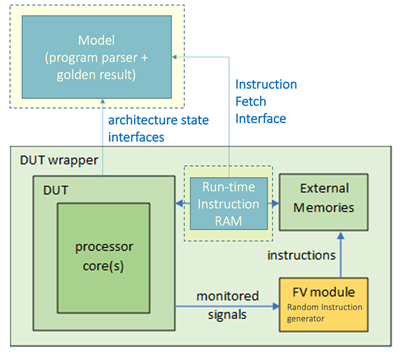
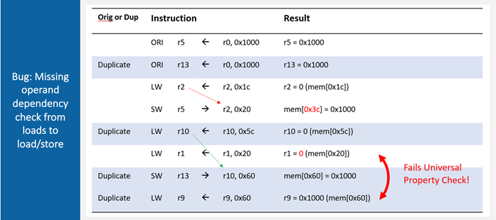

Traditional verification uses selected test sequences as the process is slow and time consuming so not every possibility is checked. As a result, unexpected corner cases can result in errors which are costly to fix especially after the design moves on to the silicon stage.
BugHunter™ has a completely new approach of using a comprehensive, formal analysis-based approach. Because it uses mathematical modelling to cover all possible cases rather than testing data sets, it is ultra-fast as it does not have to churn through masses of possible datasets that takes months. This novel approach is very flexible and can support any design changes as it is not locked to the design in the way that traditional verification is plus it is process independent.
Works with the Formal Verification tools such as JasperGold® from Cadence® or VC Formal® from Synopsys®.
BugHunter is a module that sits outside the DUT (Design Under Test) and interrogates it and the external memories with instruction sequences and monitors the results. The register file and memory

address space are split into two halves and an identical set of interrogation sequences is run through each half. This should provide the same results as it is the same sequence of operations and any differences indicate a bug. The pairs of results are compared at frequent time intervals that provide small time slices to rapidly pinpoint when the bug is happening.
There are four key aspects to BugHunter technology. The first is checking for any different results from duplicated execution instructions. The second is checking for branch errors where a different path is taken. The third is noting timeout events where the processor is no longer responding because of an instruction that is impossible to execute. And lastly, a load/store error where data has not been correctly placed in its allocated memory.

Needs redrawing into two columns of original and duplicate to make the two paths clearer
Founded by Stamford alumni, Woodpecker Verification specialises in precisely finding issues with pre- and post-silicon to improve yields and avoid costly chip failures in the field. Its disruptive solutions take verification and validation to the next level. Its international operation in headquartered in Singapore and has offices in Shanghai; Shenzhen, Guangdong, China; Hsinchu, TW; and Austin, Texas, USA. Email: projects@woodpeckerx.com www.woodpeckerverification.com
Woodpecker Verification, BugHunter and BugFinder are trademarks of Woodpecker Verification. All other trademarks are the properties of their respective owners.
The engineer team is all from top academic and industry backgrounds.